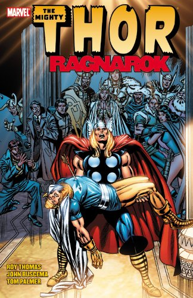
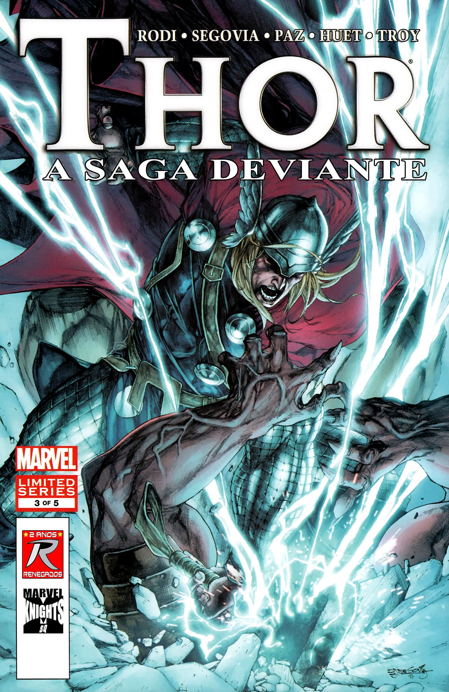

| 
|  |
 |
Thor teve uma
origem inusitada. O Dr. Donald Blake, um médico norte-americano que visitava a Noruega, encontra um
velho cajado que, ao ser batido no chão, transforma-se no martelo mágina Mjolnir e torna o Dr. Blake
no poderoso Thor, filho de Odin e Deus do Trovão. Após impedir uma invasão espacial e enfrentar outros
perigos, o herói conhece Asgard, o reino dos deuses nórdicos, e descobre que na verdade não é um médico
da Terra, mas sempre foi Thor: com dúvidas sobre a humildade de seu filho, o poderoso Odin tirou seus
poderes, apagou sua memória e o enviou para viver em nosso planeta como um humano franzino e com uma
perna aleijada.